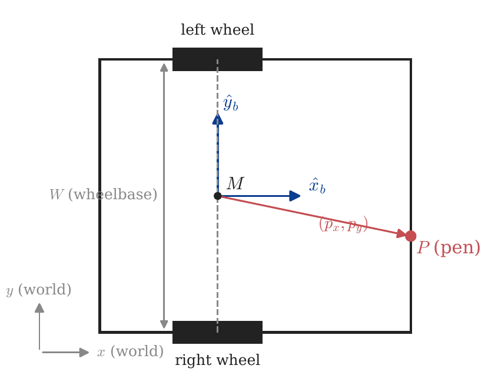
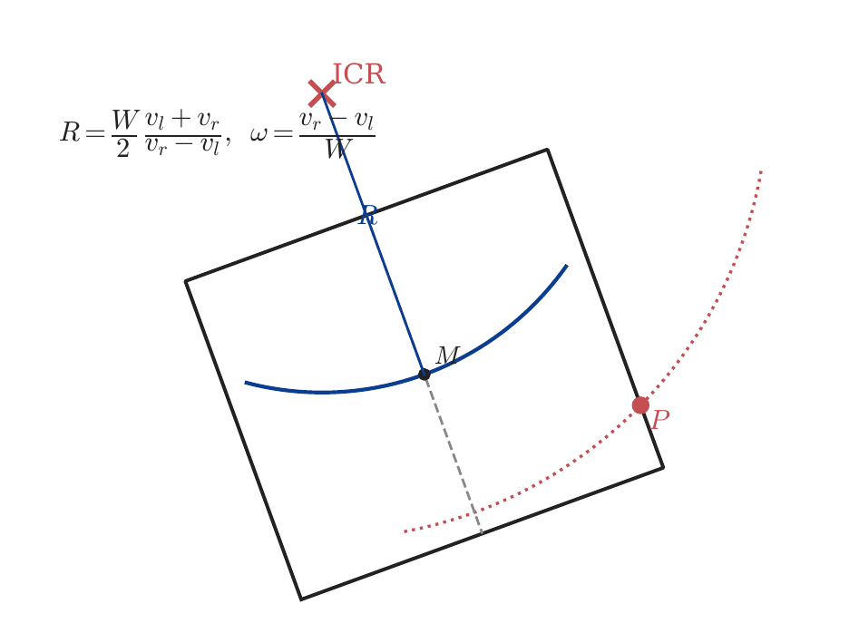
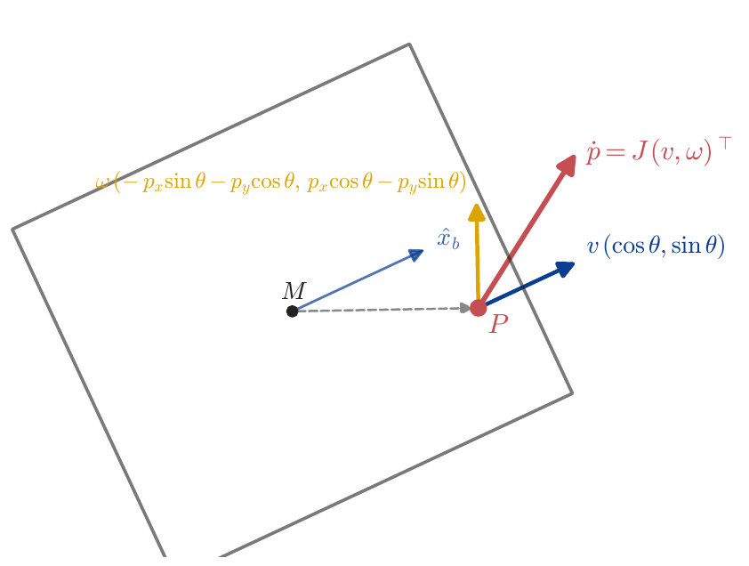
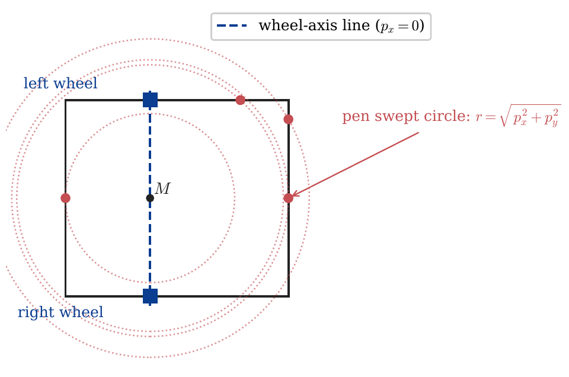
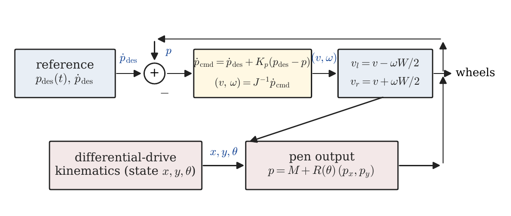
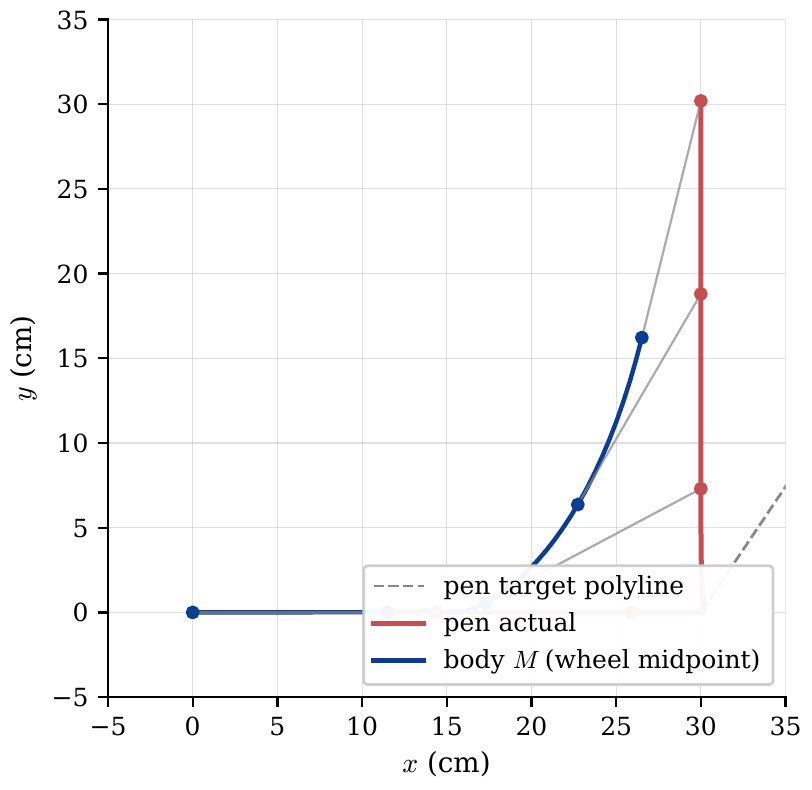
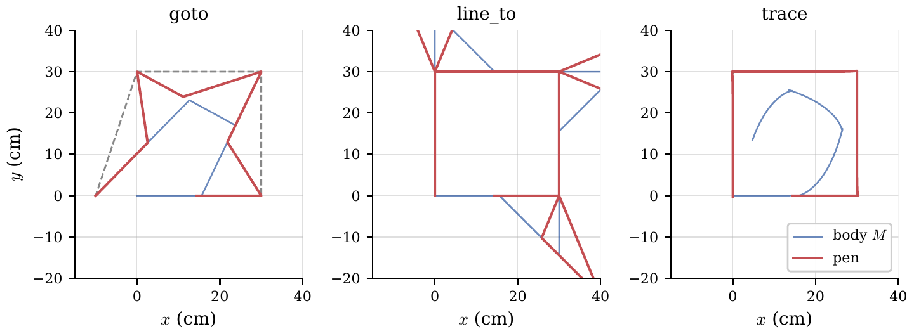

The DrawingRobot is a differential-drive chassis with a pen rigidly attached on the chassis outline. The robot draws by moving across a surface; the curve we see on paper is the pen's trajectory, not the body's. Because the pen is bolted to the chassis, the pen-tip cannot be moved independently — it is dragged around by whatever the wheels do.
This creates a tension. Differential drive has only two control inputs $(v_l, v_r)$ but three pose variables $(x, y, \theta)$, and it is non-holonomic: the body cannot translate sideways. So if the pen is also on the wheel-axis line, the pen inherits exactly the same constraint and cannot draw a sharp corner — every direction change forces a circular arc of radius at least $|p_\text{body}|$ on the page.
The good news, and the central result of this note: as soon as the pen sits off the wheel-axis line ($p_x \neq 0$ in the body frame), the pen is no longer constrained the way the body is. We can command any 2-D pen velocity we like, in real time, by inverting a $2 \times 2$ Jacobian whose determinant is exactly $p_x$. The pen tracks a polyline — corners and all — within timestep discretisation, while the body weaves underneath to make this happen.
This document covers:
trace primitive (Tema 4).goto, line_to, trace (Tema 5).The reader is expected to have first-year linear algebra (matrix inversion, $2 \times 2$ rotations) and a working idea of differential equations and feedback control. No prior robotics background is assumed.
The chassis is a rigid rectangle of width $W$ (between the wheels) and length $L$ (along the heading axis). Two independently driven wheels are mounted directly opposite each other on the two long sides, on a shared wheel axis. The midpoint of that axis, $M$, is the natural reference frame origin: the entire body's pose is determined by $M$'s world coordinates $(x, y)$ and the body's heading $\theta$ (measured CCW from world $+x$).

Let $v_l$ and $v_r$ be the linear speeds of the left and right wheel contact points. The body's linear speed (along its heading) and angular speed are
$$\boxed{\;v = \tfrac{1}{2}(v_l + v_r), \quad \omega = \dfrac{v_r - v_l}{W}\;}$$
These are the standard differential-drive equations. Set $v_l = v_r$ and the body translates straight; set $v_l = -v_r$ and it spins in place about $M$; otherwise it follows a circular arc.
Units: all quantities are in SI (cm and seconds in the simulator, but the physics is unit-agnostic). Typical numbers for the robot:
| Quantity | Symbol | Typical value |
|---|---|---|
| Wheelbase | $W$ | $20.4$ cm |
| Chassis length | $L$ | $23.2$ cm |
| Linear speed | $v$ | $\le 12$ cm/s |
| Angular speed | $\omega$ | $\le \pi$ rad/s ($180^\circ$/s) |
In the world frame, the wheel-midpoint moves along its current heading and rotates about its instantaneous centre of rotation (ICR):
$$\boxed{\;\dot{x} = v\cos\theta, \quad \dot{y} = v\sin\theta, \quad \dot{\theta} = \omega\;}$$
Notice that $\dot{x}$ and $\dot{y}$ are coupled by $\theta$ — the body cannot have $\dot{x} \neq 0$ in a direction other than $\theta$. That is the non-holonomic constraint:
$$\boxed{\;\dot{x}\,\sin\theta - \dot{y}\,\cos\theta = 0\;}$$
In words: $M$ moves only along the heading direction, never perpendicular to it. A car cannot slide sideways. Neither can $M$.
For any pair $(v_l, v_r)$ with $v_l \neq v_r$, the body traces a circle. The centre of that circle, the ICR, lies on the wheel-axis line, at distance $R$ from $M$ given by
$$\boxed{\;R = \dfrac{v}{\omega} = \dfrac{W}{2}\,\dfrac{v_l + v_r}{v_r - v_l}\;}$$
The pen, mounted somewhere on the body, traces a concentric circle of radius $|R - p_x|$ when measured along the body $x$-axis at the level of the pen — but more usefully, of radius $|\text{ICR} - P|$ where $P$ is the pen's world position. This is the picture in Figure 2.

| Concept | Formula |
|---|---|
| Body linear / angular speed | $v=\tfrac{1}{2}(v_l+v_r),\;\omega=(v_r-v_l)/W$ |
| Pose ODE | $\dot{x}=v\cos\theta,\;\dot{y}=v\sin\theta,\;\dot{\theta}=\omega$ |
| Non-holonomic constraint | $\dot{x}\sin\theta-\dot{y}\cos\theta=0$ |
| ICR / arc radius | $R=v/\omega=(W/2)(v_l+v_r)/(v_r-v_l)$ |
Things you cannot forget:
The body is what we control; the pen is what we care about. They are related by a fixed offset in the body frame:
$$\boxed{\;P = M + R(\theta)\,\begin{pmatrix}p_x\p_y\end{pmatrix},\quad R(\theta)=\begin{pmatrix}\cos\theta & -\sin\theta\ \sin\theta & \cos\theta\end{pmatrix}\;}$$
So the pen's world coordinates are
$$P_x = x + p_x \cos\theta - p_y \sin\theta, \qquad P_y = y + p_x \sin\theta + p_y \cos\theta.$$
The pen's velocity — the quantity we will want to command — is the time derivative of $P$:
$$\dot P_x = \dot x - (p_x\sin\theta + p_y\cos\theta)\,\dot\theta, \qquad \dot P_y = \dot y + (p_x\cos\theta - p_y\sin\theta)\,\dot\theta.$$
Substituting the body kinematics ($\dot x = v\cos\theta$, $\dot y = v\sin\theta$, $\dot\theta = \omega$) gives a clean linear map from body inputs to pen velocity:
$$\boxed{\;\begin{pmatrix}\dot P_x\ \dot P_y\end{pmatrix} = \underbrace{\begin{pmatrix}\cos\theta & -(p_x\sin\theta+p_y\cos\theta)\ \sin\theta & \;\;p_x\cos\theta-p_y\sin\theta\end{pmatrix}}_{J(\theta)}\, \begin{pmatrix}v\ \omega\end{pmatrix}\;}$$
$J(\theta)$ is the pen Jacobian. It is a $2\times 2$ matrix that depends on heading but not on position. Each column has a clear meaning:
Figure 3 shows this decomposition geometrically.

Computing the determinant:
$$\det J(\theta) = \cos\theta\,(p_x\cos\theta - p_y\sin\theta) - \sin\theta\,\bigl(-(p_x\sin\theta + p_y\cos\theta)\bigr)$$
Expanding,
$$= p_x\cos^2\theta - p_y\sin\theta\cos\theta + p_x\sin^2\theta + p_y\sin\theta\cos\theta = p_x(\cos^2\theta + \sin^2\theta) = p_x.$$
That is the central identity:
$$\boxed{\;\det J(\theta) = p_x\;}$$
It is independent of $\theta$ and of $p_y$. The determinant equals the body x-coordinate of the pen — the offset along the heading axis.
A $2\times 2$ matrix is invertible iff its determinant is nonzero. So $J(\theta)$ is invertible for every $\theta$ if and only if $p_x \neq 0$, i.e. the pen sits off the wheel-axis line. When $J$ is invertible, any commanded pen velocity $\dot P_\text{cmd}$ can be realised by setting
$$\begin{pmatrix}v\ \omega\end{pmatrix} = J(\theta)^{-1}\,\dot P_\text{cmd}.$$
This is feedback linearisation at the offset point: the input–output map $(v,\omega)\to \dot P$ is invertible, so the pen behaves like a fully actuated 2-D point mass even though the body underneath is non-holonomic.
When $p_x = 0$, the pen is on the wheel-axis line. $J$ is singular for every $\theta$. The pen inherits the body's non-holonomy: its instantaneous velocity is constrained to the body $\hat y_b$-direction (sideways from the body's heading) and cannot be commanded freely.
For $p_x \neq 0$, the closed form of $J^{-1}$ is convenient to have on hand. Let
$$a = p_x\sin\theta + p_y\cos\theta, \qquad b = p_x\cos\theta - p_y\sin\theta.$$
Then
$$\boxed{\;J^{-1}(\theta) = \dfrac{1}{p_x}\begin{pmatrix} b & a \ -\sin\theta & \cos\theta \end{pmatrix}\;}$$
so that, given a commanded pen velocity $(\dot P_x, \dot P_y)$,
$$\boxed{\;v = \dfrac{b\,\dot P_x + a\,\dot P_y}{p_x},\qquad \omega = \dfrac{-\sin\theta\,\dot P_x + \cos\theta\,\dot P_y}{p_x}\;}$$
These are the formulas the code uses every timestep inside _plan_trace.
| Concept | Formula |
|---|---|
| Pen world position | $P = M + R(\theta)(p_x,p_y)^\top$ |
| Pen Jacobian | $\dot P = J(\theta)(v,\omega)^\top$ |
| Determinant | $\det J = p_x$ |
| Inverse | $\omega=(-\sin\theta\,\dot P_x+\cos\theta\,\dot P_y)/p_x$ |
Things you cannot forget:
Before introducing the feedback-linearised tracker (Tema 4), it is worth understanding what a single, constant $(v_l, v_r)$ command can and cannot do for the pen. Many simple drawing primitives — arc, circle, the in-place rotation that precedes forward — are exactly that: one constant command for some duration.
Set $v_l = -v_r$. Then $v = 0$, and the body rotates about $M$ at angular speed $\omega = 2v_r/W$. The pen, rigidly mounted at body offset $(p_x, p_y)$, traces a circle about $M$ of radius
$$\boxed{\;r_\text{spin} = \sqrt{p_x^2 + p_y^2} = |p_\text{body}|\;}$$
For the simulator's default front-mid pen $(p_x, p_y) = (14.4, 0)$, the in-place spin paints a circle of radius $14.4$ cm centred on $M$. This is the most "concentrated" corner the robot can paint with one command.
For any $(v, \omega)$ with $\omega \neq 0$, the body's ICR is at distance $R = v/\omega$ from $M$ along the wheel-axis, and the pen circles the ICR at radius
$$r_\text{pen} = |\text{ICR} - P|.$$
Minimising over choice of $R$ (the only free parameter once the pen offset is fixed): the closest the ICR can ever come to $P$ is by choosing $R = p_y$ (placing the ICR exactly under $P$ on the wheel-axis), giving $r_\text{pen} = |p_x|$. Any other choice gives $r_\text{pen} \geq |p_x|$. So:
$$\boxed{\;r_\text{pen}\;\ge\;|p_x|\quad\text{for any single constant-input command}\;}$$
This is a hard kinematic floor. No single arc command — including in-place rotation, which is just the limit $R = 0$ — can paint a corner of radius smaller than $|p_x|$.
The figure below illustrates: each point on the chassis outline gives a different swept-circle radius when we command in-place rotation. Only the two wheel positions (where $p_x = 0$) produce a zero-radius circle — i.e., a sharp corner.

So if you bolt the pen anywhere on the chassis outline except exactly at one of the two wheels, no constant-input command can give you a sharp corner. If you want sharp corners — the square_pen.script and square_lines.script results bear this out — you cannot get them with primitives that emit one wheel command per move.
The way out is to emit many wheel commands per move and let the inputs vary in time. That is Tema 4.
| Concept | Formula |
|---|---|
| In-place spin radius | $r_\text{spin}=\sqrt{p_x^2+p_y^2}$ |
| General arc radius | $r_\text{pen}=|\text{ICR}-P|\ge|p_x|$ |
| Sharp-corner locus | $p_x=0$ (wheel-axis line) |
Things you cannot forget:
We now have all the pieces. Pen velocity is a linear function of body inputs through $J(\theta)$ (Tema 2), and $J$ is invertible whenever $p_x \neq 0$. So we can pick any desired pen velocity, every timestep, and find body inputs that realise it. That is the entire idea of the trace primitive.
The user's input is a polyline $V_0 \to V_1 \to V_2 \to \cdots \to V_n$ in pen coordinates. The first vertex $V_0$ is the pen's current world position; subsequent vertices are the user-specified targets.
Each edge $i$ is parameterised by arc length $s \in [0, \ell_i]$, where $\ell_i = |V_{i+1} - V_i|$ and the unit tangent is $\hat t_i = (V_{i+1} - V_i)/\ell_i$. We choose a constant pen speed $v_\text{pen}$ (the script's speed setting) and discretise time at $\Delta t = 1/120\,\text{s}$, giving $\lceil \ell_i / (v_\text{pen}\,\Delta t)\rceil$ steps per edge. At step $k$ along edge $i$:
$$P_\text{des}(k) = V_i + \min(k\,v_\text{pen}\,\Delta t,\;\ell_i)\,\hat t_i, \qquad \dot P_\text{des} = v_\text{pen}\,\hat t_i.$$
A pure feedforward law — set $\dot P_\text{cmd} = \dot P_\text{des}$ each step — would track perfectly only if the pose evolved exactly according to the integrated kinematics. In practice, integration error drifts the pen off the desired path. We add a proportional correction:
$$\boxed{\;\dot P_\text{cmd} = \dot P_\text{des} + K_p\,(P_\text{des} - P_\text{cur})\;}$$
with $K_p = 8\,\text{s}^{-1}$ in the codebase. The structure is feedforward + P-feedback at the output: the feedforward keeps the pen moving along the edge, the feedback pulls it back if it drifts. Then we invert the Jacobian to get body inputs:
$$\begin{pmatrix}v\ \omega\end{pmatrix} = J(\theta)^{-1}\,\dot P_\text{cmd},$$
and finally convert to wheel speeds by the standard differential-drive map:
$$v_l = v - \omega W/2, \qquad v_r = v + \omega W/2.$$
That is the loop. Block-diagram form:

At a vertex of the polyline, $\dot P_\text{des}$ flips direction in one timestep — going from $v_\text{pen}\,\hat t_i$ to $v_\text{pen}\,\hat t_{i+1}$. The inverse-Jacobian solve still gives a finite $(v, \omega)$, just briefly with very large $|\omega|$: the body has to spin fast for one or two ticks to swing the pen-tip around. The pen tracks the corner exactly within $O(v_\text{pen}\,\Delta t)$ rounding; the body trajectory underneath is generally not a polyline — it weaves and loops to make the pen-tip do what is asked of it.

There are three things to be careful about:
trace for pens on the wheel-axis line; use line_to or goto there. (For pens near the axis, $\omega$ stays finite but is large.)A more robust planner would (a) approach the first vertex with a setup move so the body starts on a feasible trajectory, (b) bound $|\omega|$ to a maximum and round corners only when it would otherwise saturate, and (c) damp the corner sharpness when $|p_x|$ is small. The current implementation does none of these — the corner lemma is purely kinematic, not an optimal-control statement.
| Concept | Formula |
|---|---|
| Reference along edge $i$ | $P_\text{des} = V_i + s\,\hat t_i$, $\dot P_\text{des} = v_\text{pen}\hat t_i$ |
| Control law | $\dot P_\text{cmd} = \dot P_\text{des} + K_p(P_\text{des}-P_\text{cur})$ |
| Body inputs | $(v,\omega) = J(\theta)^{-1}\,\dot P_\text{cmd}$ |
| Wheel speeds | $v_l = v - \omega W/2,\;v_r = v + \omega W/2$ |
Things you cannot forget:
The codebase implements three pen-aware path commands, each with a different idea about where to put the corner curvature:
goto X Y — pen lands on $(X, Y)$. Plans rotate-then-forward. Each leg is two wheel commands. The rotation sweeps a pen circle of radius $|p_\text{body}|$ centred on $M$ — the corner curve is large and centred between polyline vertices.line_to X Y — pen draws a straight line from its current world position to $(X, Y)$. Plans rotate-translate-rotate setup + forward. The setup repositions $M$ so the pen sits at the same world point but with the body aligned to the new edge direction. Each polyline edge is then exactly straight on the page; the corner curvature is concentrated at the vertex (the setup translation $|\Delta| = \sqrt{2}\,|p_\text{body}|$ for a $90^\circ$ turn).trace V_1 V_2 ... V_n — pen tracks the polyline via the feedback linearisation of Tema 4. Each edge is straight; the corners are sharp within timestep discretisation.Figure 7 runs the three plans against a $30\,\text{cm}$ square with the same off-axis pen $p_x = 14.4\,\text{cm}$, $p_y = 0$. Body trajectory in blue, pen in red.

A few observations:
goto produces a chaotic shape. The intended polyline is the dashed grey diamond; the actual pen trace cuts across because each leg's setup rotation paints an arc whose curvature is centred between the corners. With $|p_\text{body}| = 14.4$ cm and $30$ cm legs, the arcs dominate the legs.line_to paints the four edges correctly (straight line on the page) but the corner setup translates $M$ by $|\Delta| = \sqrt 2 \times 14.4 \approx 20$ cm, and that pen-loop projects outward from each vertex.trace paints a square. The pen lands on each vertex (within $\sim 0.2$ cm at the final vertex, dominated by integration drift over the full path); the body $M$ traces a curve inside the square — small circles at each corner where the body has to swing fast for the pen to turn.| Strategy | Pen tracks polyline? | Corner radius | Cost |
|---|---|---|---|
goto |
only at vertices | bulges between legs, radius $\sim | p_\text{body} |
line_to |
edges yes, corners no | localized at vertex, $ | \Delta |
trace |
yes, including corners | $\sim v_\text{pen}\Delta t$ | $\sim \ell_i / (v_\text{pen}\Delta t)$ wheel cmds / edge |
For a pen close to the wheel-axis line ($|p_x|$ small), trace will demand large $\omega$ at corners and may saturate. In that regime line_to is more robust at the cost of visible corner arcs. For a pen far from the axis (front-mid mounting in particular, $|p_x|$ comparable to the chassis half-length), trace wins on every metric.
For a pen exactly on the wheel-axis line ($p_x = 0$), trace is undefined and must not be used. line_to and goto reduce to pure rotate-then-translate plans (no setup translation, since the pen is on the axis), and the body is just driven directly. In that special case the body and pen trace coincide and sharp corners come for free — but everything else suffers, e.g. the pen cannot move sideways at all within an edge, only along the heading.
| Strategy | Where the corner curvature goes |
|---|---|
goto |
between polyline vertices (large arcs span the leg) |
line_to |
localised at each vertex (chunky corner, but edges are exact) |
trace |
nowhere — corner is sharp, body absorbs the curvature |
Things you cannot forget:
line_to makes edges exact but corners chunky; trace makes both edges and corners exact at the cost of more wheel commands per second.trace sidesteps it with per-timestep control.A consolidated reference. Symbols are defined where introduced; this is for quick review.
$$v = \tfrac{1}{2}(v_l + v_r),\qquad \omega = \dfrac{v_r - v_l}{W}$$ $$\dot x = v\cos\theta,\quad \dot y = v\sin\theta,\quad \dot\theta = \omega$$ $$R = v/\omega = \dfrac{W}{2}\,\dfrac{v_l + v_r}{v_r - v_l}$$ $$\dot x\sin\theta - \dot y\cos\theta = 0 \quad\text{(non-holonomic constraint)}$$
$$P = M + R(\theta)\,(p_x, p_y)^\top$$ $$P_x = x + p_x\cos\theta - p_y\sin\theta,\qquad P_y = y + p_x\sin\theta + p_y\cos\theta$$
$$J(\theta) = \begin{pmatrix}\cos\theta & -(p_x\sin\theta+p_y\cos\theta)\ \sin\theta & p_x\cos\theta-p_y\sin\theta\end{pmatrix},\qquad \det J = p_x$$
$$J^{-1}(\theta) = \dfrac{1}{p_x}\begin{pmatrix}b & a\ -\sin\theta & \cos\theta\end{pmatrix}$$
with $a = p_x\sin\theta+p_y\cos\theta,\;b = p_x\cos\theta-p_y\sin\theta$.
$$\dot P_\text{cmd} = \dot P_\text{des} + K_p\,(P_\text{des} - P_\text{cur})$$ $$(v, \omega)^\top = J(\theta)^{-1}\,\dot P_\text{cmd}$$ $$v_l = v - \omega W/2,\qquad v_r = v + \omega W/2$$
$$r_\text{pen} \ge |p_x| \quad\text{for any single-input command}$$ $$r_\text{spin} = \sqrt{p_x^2 + p_y^2}\quad\text{(in-place rotation, $v=0$)}$$
| Constant | Symbol | Value |
|---|---|---|
| Chassis length | $L$ | $23.2$ cm |
| Chassis width / wheelbase | $W$ | $20.4$ cm |
| Wheel offset from back | $\ell_\text{wo}$ | $8.8$ cm |
| Wheel diameter | $d_w$ | $6.6$ cm |
| Linear pen speed | $v_\text{pen}$ | $12$ cm/s |
| Angular speed (rotation primitive) | $\omega_\text{rot}$ | $\pi$ rad/s |
| Tracking timestep | $\Delta t$ | $1/120$ s |
| Tracking P-gain | $K_p$ | $8$ s$^{-1}$ |
| Quantity | Symbol | Unit |
|---|---|---|
| Length | $x, y, p_x, p_y$ | m (the simulator uses cm; physics is unit-agnostic) |
| Angle | $\theta$ | rad |
| Linear speed | $v, v_l, v_r$ | m/s |
| Angular speed | $\omega$ | rad/s |
| Time | $t, \Delta t$ | s |
| Wheelbase | $W$ | m |